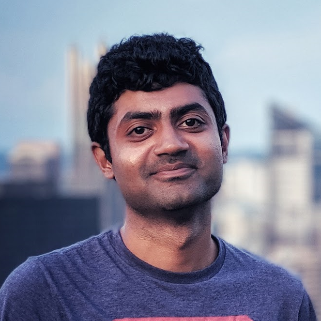

Tushar Kanakagiri


I'm an Applied Scientist at Microsoft Azure, where I train models and build intelligent systems that automate how engineers diagnose and resolve complex cloud issues — blending large language models with classic learning approaches to build systems that learn, reason, and assist at scale.
Previously, I built and deployed ML systems at Citrix R&D and interned at Goldman Sachs, the Indian Academy of Sciences, and Zomato.
I have a Master's from the Language Technologies Institute 🎓 at Carnegie Mellon University, where I worked with Prof. Alan Black and Prof. Yulia Tsvetkov on building NLP systems that understand language, context, and culture across diverse communities. At R.V. College of Engineering, I earned a bachelor's in Computer Science, was named the Best Outgoing Student, and won the National Debating Championship.
Outside Microsoft, I enjoy exploring ideas that solve real problems — building products that take these ideas from prototype to something people actually use.
I love the outdoors 🌲. I'm an avid hiker and triathlete 🏊♂️🚴♂️🏃♂️, always chasing the next endurance goal — an Ironman, and someday, thru-hiking the Appalachian and Pacific Crest Trails.